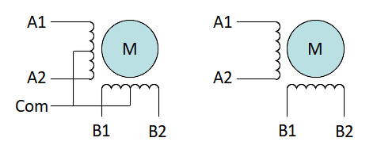
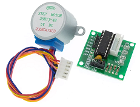

|
Stepper Motor 1.0
Stepper Motor Library
|
|
Stepper Motor 1.0
Stepper Motor Library
|
This library provides services to control unipolar and bipolar stepper motors through appropriate intermediate hardware drivers. It is intended for control of motors used in robotic applications running at modest step frequencies (ie up to low KHz rates).
Motion can be enabled in a polled mode for generic architectures or from an interrupt timer for AVR architectures, using either AVR timer 1 or 2 (selectable at compile time).
The motor control interface is 4 digital output pins specified in the class constructor. These pins are connected to external motor control hardware to provide the appropriate H-bridge connections for control bipolar motors) or current switching (unipolar motors).
The pins are labeled in pairs A1, A2, B1, B2 for the 2 motor coils as shown in the figure below.


28BYJ-48 with ULN2003 driver - Unipolar stepper with coil wire pairs BLU/YLW, ORN/PNK and common RED. I/O pin wiring INA1 to IND, INA2/INB, INB1/INC, INB2/INA.
See Also